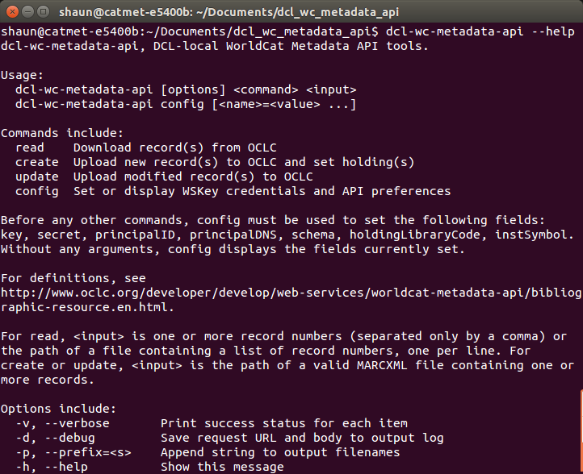

<!doctype html>
<html lang="en">

  <head>
    <meta charset="utf-8">

    <title>On-Demand Batch Processing with the WorldCat Metadata API</title>

    <meta name="description" content="Presentation at the 2017 OCLC DEVCONNECT conference">
    <meta name="author" content="Shaun Akhtar">

    <meta name="apple-mobile-web-app-capable" content="yes" />
    <meta name="apple-mobile-web-app-status-bar-style" content="black-translucent" />

    <meta name="viewport" content="width=device-width, initial-scale=1.0, maximum-scale=1.0, user-scalable=no, minimal-ui">

    <link href='https://fonts.googleapis.com/css?family=Source+Sans+Pro|Montserrat:700|Ubuntu+Mono' rel='stylesheet' type='text/css'>

    <link rel="stylesheet" href="reveal.js/css/reveal.css">
    <link rel="stylesheet" href="reveal.js/css/theme/dartmouth2.css" id="theme">

    <!-- Code syntax highlighting -->
    <link rel="stylesheet" href="reveal.js/lib/css/zenburn.css">

    <!-- Personal styles -->
    <style type="text/css">
    .reveal h3, .reveal h4, .reveal h5, .reveal h6 {
      text-transform: none;
    }
    </style>

    <!-- Printing and PDF exports -->
    <script>
      var link = document.createElement( 'link' );
      link.rel = 'stylesheet';
      link.type = 'text/css';
      link.href = window.location.search.match( /print-pdf/gi ) ? 'reveal.js/css/print/pdf.css' : 'reveal.js/css/print/paper.css';
      document.getElementsByTagName( 'head' )[0].appendChild( link );
    </script>

    <!--[if lt IE 9]>
    <script src="reveal.js/lib/js/html5shiv.js"></script>
    <![endif]-->
  </head>

  <body>

    <div class="reveal">

      <!-- Any section element inside of this container is displayed as a slide -->
      <div class="slides">
        <section data-markdown data-separator-notes="^Note:">
          <script type="text/template">
            # On-Demand Batch Processing with the WorldCat Metadata API

            Shaun Akhtar, Dartmouth College Library

            OCLC DEVCONNECT 2017<br/>
            <span style="color: #a5ba82;">@ShaunAkhtar #OCLCDEV17</span>

            Note:
            Hi everyone, my name is Shaun Akhtar, and I work as a Metadata Librarian at the Dartmouth College Library. I'll be talking today about our use of the WorldCat Metadata API for batch processing within our digital library workflows.
          </script>
        </section>

        <section data-markdown data-separator-notes="^Note:">
          <script type="text/template">
            ## Outline

            Project goals

            Introducing the API

            Creating a new utility

            How it works

            Where we've applied it so far

            What's next

            Note:
            These are the topics I hope to cover in today's session.

            Before getting started, I'd like to thank the staff at OCLC for organizing this event and for the opportunity to speak here today. In particular, thanks to Hank, who's been great with logistics in advance of and during the conference, and to Karen, who has been our technical contact and a fantastic resource for the work described in this presentation.
          </script>
        </section>

        <section data-markdown data-separator-notes="^Note:">
          <script type="text/template">
            ## Process Overview

            Metadata management for the Digital Library Program

            Item-level descriptions created in or transformed into MODS

            Includes new projects and retrospective data conversion

            MODS stored in local metadata repository

            Metadata converted to other schemas for distribution

            Note:
            My primary role at Dartmouth is helping create and manage metadata for our locally-produced digital collections. Work within the Digital Library Program is heavily project-focused, directed by proposals to digitize or acquire born-digital materials, and publish them open access, in support of teaching and scholarship.

            These projects vary greatly in terms of format type, the number of items within the collection, and the sources and quality of metadata that may exist at the beginning of the process. No matter the starting point, we produce a set of records in MODS, which is our preferred schema for descriptive metadata at both the collection level and item level.
          </script>
        </section>

        <section data-markdown data-separator-notes="^Note:">
          <script type="text/template">
            ## Multiple Metadata Products

            Desktop processes for creation and transformation

            MODS → XSLT → MARCXML, CSV, Crossref XML, HTML, etc.

            Populate delivery platforms, catalog, discovery services

            Note:
            These records are then converted to other schemas and serializations, as necessary, for use in internal and external systems. The full set of destinations varies depending on the project, but usually includes our Sierra ILS, as well as Crossref, our DOI registration agency. A significant amount of our metadata creation and transformation work currently takes place in a desktop environment, using the Oxygen XML Editor.
          </script>
        </section>

        <section data-markdown data-separator-notes="^Note:">
          <script type="text/template">
            ## A Missing Destination

            Large number of records for unique collections

            But limited object-level representation in WorldCat

            Note:
            Most of the materials produced through the Digital Library Program are unique, and we often have rich item-level metadata for them. In total, there are tens of thousands of objects contained in these collections. However, historically these collections have not been well-represented at the item level in WorldCat.

            As we continue to develop our digital library infrastructure, this is one gap we wished to address. Increasing discoverability for these open resources is a continual goal, and we realized that benefits could be gained by improving coverage for these collections in WorldCat.
          </script>
        </section>

        <section data-markdown data-separator-notes="^Note:">
          <script type="text/template">
            ## Building a New Pipeline

            How can we extend our digital library workflow with a convenient pipeline for contributing metadata to WorldCat?

            Note:
            So this is really our problem statement: How can we extend our digital library workflow with a convenient pipeline for contributing metadata to WorldCat?
          </script>
        </section>

        <section data-markdown data-separator-notes="^Note:">
          <script type="text/template">
            ## Workflow Requirements

            Operate at scale

            Control the upload process

            Reuse OCLC record numbers elsewhere

            Support iterative metadata enhancement

            Note:
            Tackling this problem comes with a few specific requirements. Since the size of each collection varies greatly, we need a scalable solution. Ideally, the process should be quick and be entirely under our control, not requiring coordination with staff outside our local metadata team, so that it does not become an outsize component of a multifaceted workflow involving many systems. This is one reason why we wanted to explore solutions outside of traditional OCLC batchload services.

            From a metadata management perspective, one of the big gains to be made through representation in WorldCat is an OCLC record number that can be reused as a trusted identifier across systems. We would want this number to be carried within the records in our local metadata repository, our catalog, and elsewhere as applicable.

            Finally, to truly be a sustainable solution, we need something that would support updating records as easily as creating them. For materials in our Digital Library Program, we have a dual role as catalogers and publishers, and are more likely to undertake metadata enhancement projects than with other collections. Our MODS records are the definitive descriptions for these items, and other formats, such as MARC, are considered secondary. So it's important to us that when we improve our MODS data, we are able to effect those changes throughout other systems, including those external to us, such as WorldCat.
          </script>
        </section>

        <section data-markdown data-separator-notes="^Note:">
          <script type="text/template">
            ## The WorldCat Metadata API

            Debuted in June 2013

            HTTP read-write access to WorldCat production data

            Expects and returns data serialized as MARCXML

            Mostly operates on one record at a time

            Note:
            With those requirements identified, here enters the WorldCat Metadata API. I believe that it has been available to OCLC cataloging subscribers for nearly four years now. The API provides direct access to production-level WorldCat data. Bibliographic data can be submitted as MARCXML, and received as MARCXML wrapped within Atom XML. I also want to note that most of its operations act on one record at a time.
          </script>
        </section>

        <section data-markdown data-separator-notes="^Note:">
          <script type="text/template">
            ## API Operations

            An umbrella over actions on four types of WorldCat data:

            1. <span class="fragment highlight-green">Bibliographic Resource (read, create, update, validate)</span>
            2. <span class="fragment highlight-green">Holdings Resource (set, unset)</span>
            3. Holding Codes (read)
            4. Local Bibliographic Data Resource (read, create, update, delete, search)

            Note:
            The API provides opportunities to carry out read and write operations in 4 different areas. The work I'm discussing today involves 2 of them, [...] Bibliographic Resource and Holdings Resource, though similar approaches could apply to Holding Codes and Local Bibliographic Data operations.
          </script>
        </section>

        <section data-markdown data-separator-notes="^Note:">
          <script type="text/template">
            ## Existing Applications

            Reese, Terry. "Opening the Door: A First Look at the OCLC WorldCat Metadata API." _Code4Lib Journal_ 25 (2014). http://journal.code4lib.org/articles/9863

            Johnston, Sarah. "Homegrown WorldCat Reclamation: Utilizing OCLC’s WorldCat Metadata API to Reconcile Your Library’s Holdings." _Code4Lib Journal_ 27 (2015). http://journal.code4lib.org/articles/10328

            Note:
            I want to acknowledge some of the first applications of the Metadata API. Terry Reese, in addition to having just presented here today, wrote an introductory article in Code4Lib a few years ago that was very helpful in getting me thinking about its capabilities.

            Sarah Johnston, from St. Olaf College, also wrote an instructive article about her implementation, where she developed Perl scripts that used the Metadata API as part of a complete holdings reclamation project.
          </script>
        </section>

        <section data-markdown data-separator-notes="^Note:">
          <script type="text/template">
            ## Open-Source API Infrastructure

            Terry Reese's API wrapper gem<br/>
            https://github.com/reeset/wc_metadata_api/

            OCLC's Web Service authentication wrapper gem<br/>
            https://github.com/OCLC-Developer-Network/oclc-auth-ruby

            Note:
            I was fortunate to have access to a couple of open-source code libraries that greatly advanced the starting point for this project. Reese had developed a wrapper that simplified calling each of the individual API operations, which he described in the Code4Lib article. OCLC had made available standardized methods for Web Service authentication. This made it much more feasible to explore writing code that could meet our needs for batch processing XML data.
          </script>
        </section>

        <section data-markdown data-separator-notes="^Note:">
          <script type="text/template">
            ## Project Requirements

            Operate at scale<br/>
            <span class="fragment" style="color: #a5ba82">Handle record batches of indeterminate size</span>

            Control the upload process<br/>
            <span class="fragment" style="color: #a5ba82">Be easy to use<br/>
            Log each operation status individually</span>

            Reuse OCLC record numbers elsewhere<br/>
            <span class="fragment" style="color: #a5ba82">Save MARCXML for further processing</span>

            Support iterative metadata enhancement<br/>
            <span class="fragment" style="color: #a5ba82">Provide similar pathways for creating and updating records</span>

            Note:
            Returning to the workflow requirements described earlier, this is one interpretation of translating them to specific goals for the utility I wanted to develop. [...] It should be able to process input datasets of any size. [...] It should be easy to use and reuse; for example, not require altered scripts for each collection. [...] It should minimize the manual work involved in applying it, by automatically recording information about successes and failures, and by returning output that is serialized similarly to the input. [...] In addition, because a project may pass through this stage in our digital library metadata workflow multiple times as enhancements occur, ideally updating a record for the n-th time should be as simple as initially creating it.

            I do want to note that this work was not approached from a formal product development perspective, and that I am primarily not a developer. I was the initial intended user for my utility, which has its pros and cons. However, this experience has been a good learning opportunity for building a tool that is hopefully applicable and shareable beyond my own use case, and offered a valuable crash course in Ruby.
          </script>
        </section>

        <section data-markdown data-separator-notes="^Note:">
          <script type="text/template">
            ## API Lessons Learned

            No true sandbox environment

            Creating master record + setting holdings = two operations

            Multiple administrative match points: 001, 005, 040$d

            Holdings operations can be batched in sets of 50

            WorldCat processing applied (e.g. validation, character sets)

            Note:
            Before getting into what I developed, I first want to identify some of the significant takeaways that I've gained from working with the Metadata API, as well as from helpful conversations with Karen during this time. Each of these provide their own challenges, and could be addressed by different strategies in a combination of software design and workflow design.

            The Metadata API lacks a true sandbox environment, as it always works within the production WorldCat database. Using response mocks for code tests, as Karen described in her great workshop yesterday, would be a good approach for many of these operations.

            The Bibliographic Resource operation that creates a master record does not automatically set your holdings on that new record. That requires a separate call using the Holdings Resource operation, with the newly-created OCLC record number. That number itself can only be easily programmatically retrieved by extracting and saving it from the results of the first request.

            The API doesn't have the concept of locking a master record, analogous to the Connexion client function. Instead, when a record update is submitted, the values of the 005 timestamp and the 040$d list of modifying agencies are compared against the current master record. If they don't match, the intended update is out of date, and the operation is rejected.

            Although create, update, and read operations can only happen one at a time, setting or removing holdings themselves can also be done in batches of up to 50. This can be leveraged to at least partially reduce the number of necessary API calls.

            In addition, the API will apply various processing routines, as done for other WorldCat data, which may adjust the MARCXML returned by successful operations. There are recently-added API operations that can provide different levels of validation processing without creating or updating.
          </script>
        </section>

        <section data-markdown data-separator-notes="^Note:">
          <script type="text/template">
            ## Utility Overview

            A command-line Ruby executable

            Just two mandatory arguments:

            1. Operation type
            2. Input file path or record number list

            Automatically writes output to disk

            Note:
            Okay, all of that out of the way, I assembled a utility that facilitates using the Metadata API for batch processing. Written in Ruby, as are the two wrappers that it utilizes, it can be called directly from the command line, and requires just two arguments: the particular operation requested, and the path to the input file. Alternatively, if you're reading, that is, downloading, existing records, you can provide a comma-separated list of record numbers. The results of your operation are automatically saved to disk.
          </script>
        </section>

        <section data-markdown data-separator-notes="^Note:">
          <script type="text/template">
            

            Note:
            If you install it, and pull up the manual in your terminal, this is what you'll see.

            The `create` command here does both create the record, and set your holdings on it.
          </script>
        </section>

        <section data-markdown data-separator-notes="^Note:">
          <script type="text/template">
            ## Key Configuration

            Seven fields required to generate WSKey

            One-time* `config` command after install

            Stored locally—not currently treated as sensitive data

            Note:
            An OCLC Web Service key, with specific permissions to use the Metadata API, is required. Before using any operations of the API, parts of the key and related parameters must be provided with a `config` command. This is a one-time process, though the configuration is overwritten if the utility is reinstalled. I'll make the disclaimer that the utility just saves these parameters to a local YAML file, which may not meet every application's security needs.
          </script>
        </section>

        <section data-markdown data-separator-notes="^Note:">
          <script type="text/template">
            ## Operation and Output

            ```sh
            $ dcl-wc-metadata-api create ~/Desktop/dcl-ruby/input/marc-batch-2017012513480113.xml
            OCLC WorldCat Metadata API: Create operation
            Created 525 records, 0 failed
            Records written to wc-create-20170125142407.xml
            Log written to wc-create-20170125142407-log.txt
            ```

            Note:
            This is a basic example of using the utility from the command line to create new master records, processing a batch contained within a single MARCXML document. The default output includes a new MARCXML document with the returned records, a text log file, and a summary printed to the console. The timestamps are automatically generated as a default identifier.
          </script>
        </section>

        <section data-markdown data-separator-notes="^Note:">
          <script type="text/template">
            ## WorldCat MARCXML

            ```xml
            <!-- wc-create-20170125142407.xml -->
            <?xml version="1.0"?>
            <collection xmlns="http://www.loc.gov/MARC21/slim">
              <record>
                <leader>00000ntm a2200000Ki 4500</leader>
                <controlfield tag="001">ocn969995846</controlfield>
                <controlfield tag="003">OCoLC</controlfield>
                <controlfield tag="005">20170125140753.1</controlfield>
            [...]
            ```

            Note:
            Inside the returned MARCXML batch, which has been extracted from within the Atom wrapper, each record contains the expected OCLC administrative metadata, which must be stored to facilitate submitting future updates through the API.
          </script>
        </section>

        <section data-markdown data-separator-notes="^Note:">
          <script type="text/template">
            ## Option Flags

            ```sh
            $ dcl-wc-metadata-api -v -p "dwcposters" create ~/Desktop/dcl-ruby/input/marc-batch-2015110513520969.xml

            (DRB)dwcposters-c012: created
            (DRB)dwcposters-c013: created
            (DRB)dwcposters-c014: created
            (DRB)dwcposters-c019: failed
            (DRB)dwcposters-c020: created
            (DRB)dwcposters-c025: created
            [...]
            927732454: holding set
            927732541: holding set
            927732472: holding set
            [...]
            ```

            Note:
            A few optional settings are currently available. The `-v` flag prints the status of each operation to the console as it occurs. The `-p` flag can be used to provide a prefix for the output file names. In this example, one record creation operation failed, but the utility continues processing the batch. After the new records are created, the API is invoked to set holdings on each one.
          </script>
        </section>

        <section data-markdown data-separator-notes="^Note:">
          <script type="text/template">
            ## Log Files

            ```xml
            # dwcposters-wc-create-20151105144401-log.txt

            RESULT(S)

            (DRB)dwcposters-c019: failed
            [...]
              <oclc:error>
                <oclc:code type="application">CAT-VALIDATION</oclc:code>
                <oclc:message>Record is invalid</oclc:message>
                <oclc:detail type="application/xml">
                  <validationErrors xmlns="">
                    <validationError type="variable field">
                      <field occurrence="3" name="500"/>
                      <message>Invalid character in position 1 in 1st $a in 3rd 500
                      - data must be ALA characters.</message>
                    </validationError>
                  </validationErrors>
                </oclc:detail>
              </oclc:error>
            ```

            Note:
            The log file records the status of each operation, whether a success or failure. If an operation is rejected by OCLC, the API will provide an error message, and this is included in the log.
          </script>
        </section>

        <section data-markdown data-separator-notes="^Note:">
          <script type="text/template">
            ## Components

            - 1 Ruby executable file
            - 1 Ruby module
            - 1 Ruby class, `Manager`
            - Command-line option parser
            - Terry Reese's API wrapper
            - OCLC authentication wrapper

            Note:
            The utility is simple in design, defining input parsing and a few functions to automate repetition of API calls to process the input, no matter how large or small, and provide hopefully useful output.
          </script>
        </section>

        <section data-markdown data-separator-notes="^Note:">
          <script type="text/template">
            ## The `Manager` Class

            Stores MARCXML-related configuration constants

            Uses wrappers to create credentialed `Client` instance

            Iterates through provided records/record numbers one by one, calling API and recording each response

            Prints updates to console, if requested via `-v`

            Writes returned records and status reports to disk

            Note:
            A new Ruby class, called the `Manager`, does the bulk of the work behind the scenes. The MARCXML configuration constants include, for example, XPath statements that provide the location of local and OCLC record identifiers, which are used in logging. A credentialed `Client` object only needs to be created once, using Reese's wrapper, and is reused for each operation in the set. The `Manager` iterates through the input data and the requested operations, storing the result status and XML response for each, and ensures that information is written to disk even if errors are encountered along the way.
          </script>
        </section>

        <section data-markdown data-separator-notes="^Note:">
          <script type="text/template">
            ## Inside the `Manager`
            ```ruby
            class Manager

              attr_reader :global_opts
              attr_accessor :credentials, :client, :cmd
              attr_accessor :debug_info, :response_status, :response_data
              attr_accessor :successes, :failures

              XMLNS_MARC = "http://www.loc.gov/MARC21/slim"
              RECORD_XPATH = "//marc:record"
              OCLC_NUM_XPATH = "marc:controlfield[@tag='001']"
              ID_XPATH = "marc:datafield[@tag='035']/marc:subfield[@code='a']"
              WC_URL_XPATH = "//xmlns:id" # In returned Atom XML wrapper
              PAST_TENSE = { "read" => "read", "create" => "created",
                "update" => "updated" }

              # Set up API client
              def initialize(options={})
                @global_opts = options # Provided via command line
                @credentials = DCL_WC_METADATA_API.validate_credentials
                @client = WC_METADATA_API::Client.new(
                  :wskey => @credentials["key"],
                  :secret => @credentials["secret"],
                  :principalID => @credentials["principalID"],
                  :principalDNS => @credentials["principalDNS"],
                  :debug => false
            [...]
            ```

            Note:
            Here's a peek at the start of the code that defines the `Manager`, including a number of instance variables, the aforementioned constants, and the initialization method, which creates the credentialed `Client`.
          </script>
        </section>

        <section data-markdown data-separator-notes="^Note:">
          <script type="text/template">
            ## Workflow Integration

            Administrative metadata fields merged into MODS records

            MARCXML (with OCLC numbers) converted to MARC, uploaded to catalog and discovery services

            Subsequent metadata updates start in MODS, transformed to MARCXML for resubmission via API

            Note:
            When we create or update records using the API, we then merge the resultant WorldCat administrative metadata fields back into the MODS records in our local repository, using a small XSL transformation. The MARCXML is also converted to binary MARC and is ready for load into Sierra and other MARC-based systems.

            When we update our MODS records and intend to push changes up through the API, we first have to check to ensure that the WorldCat master records have not been replaced since the last time we submitted them. For the Digital Library Program, where these materials are usually unique, it is unlikely that another library will modify the records. It's mostly a question of whether OCLC quality control or enhancement processes have made changes, and whether there are corrections we need to make upstream as a result. However, our workflow to handle this could be further standardized.
          </script>
        </section>

        <section data-markdown data-separator-notes="^Note:">
          <script type="text/template">
            ## Merge via XSLT

            ```xml
            <xsl:key name="doiKey" match="marc:record" use="marc:datafield[@tag='856']/marc:subfield[@code='u']"/>

            <!-- Overwrite existing record if an OCLC number is found in data to merge -->
            <xsl:template name="start">
              <xsl:for-each select="$input">
                <xsl:variable name="filename" select="concat(mods:mods/mods:recordInfo/mods:recordIdentifier[@source='DRB'], '-mods.xml')"/>
                <xsl:variable name="doi" select="mods:mods/mods:identifier[@type='doi']"/>
                <xsl:if test="document($marcxml)/key('doiKey', $doi) != ''">
                  <xsl:result-document href="{$filename}" method="xml" indent="yes">
            [...]
            ```

            Note:
            Here's a snippet of the XSLT that does the merging from MARCXML back into MODS. Although our local identifier is provided in the 035 field in the API request, it does not come back in the response from OCLC, because that field is not stored in master records. As a result, we actually use the DOI in the 856 as the match point between the MARCXML and MODS, because it will always be present in both records, and is always unique. This particular solution is specific to our current use case, and other contexts may require different match points.
          </script>
        </section>

        <section data-markdown data-separator-notes="^Note:">
          <script type="text/template">
            ## Stored Administrative Metadata

            ```xml
            <mods:recordInfo>
              <mods:descriptionStandard authority="marcdescription">dacs</mods:descriptionStandard>
              <mods:descriptionStandard authority="marcdescription">rda</mods:descriptionStandard>
              <mods:recordContentSource authority="oclcorg">DRB</mods:recordContentSource>
              <mods:recordCreationDate encoding="w3cdtf">2017-01-23</mods:recordCreationDate>
              <mods:recordChangeDate encoding="w3cdtf">2017-01-26</mods:recordChangeDate>
              <mods:recordChangeDate encoding="iso8601">20170127162537.0</mods:recordChangeDate>
              <mods:recordInfoNote type="date entered as MARC">170125</mods:recordInfoNote>
              <mods:recordIdentifier source="DRB">occom-786661</mods:recordIdentifier>
              <mods:recordIdentifier source="OCoLC">ocn969997049</mods:recordIdentifier>
            [...]
            ```

            Note:
            This is an excerpt from an item-level MODS record, showing the administrative metadata from WorldCat alongside our own elements. Note the multiple timestamps and identifiers.
          </script>
        </section>

        <section data-markdown data-separator-notes="^Note:" data-background-image="images/785665_002.png">
          <script type="text/template">
            ## Recent Collections Supported

            _The Occom Circle_<br/>18th-century manuscripts, imaged with transcriptions in TEI

            _Dartmouth Winter Carnival Posters_<br/>A hundred years of digitized event posters

            _Dartmouth Dissertations_<br/>Collection of digitized and born-digital Ph.D. dissertations

            Note:
            These collections are recent projects for which we have applied the utility to push metadata up to WorldCat. As a result, these unique materials are now represented at the item level, and have OCLC numbers in our repository that will persist across platforms.
          </script>
        </section>

        <section data-markdown data-separator-notes="^Note:">
          <script type="text/template">
            ## Next Steps

            Fix cross-platform compatibility issues

            Review and enhance to meet best practices for API tools

            Explore adding support for validation and standalone holdings operations, and further configuration options

            Test applicability to other local metadata workflows originating outside MARC, such as finding aids in EAD

            Note:
            There is more I would like to do in developing the utility. It was originally written and implemented on a Linux machine, and I am still ironing out some cross-platform issues.

            Based on the content of Karen's workshop, the utility would benefit from a new code review and enhancements to meet best practices.

            The API has evolved since I began working with it, and there are opportunities to add capabilities both for existing and potentially new applications. I think that the Metadata API could be easily applied to a variety of workflows in which records are produced at scale. I'd be especially interested to hear more about applications to metadata originating outside of MARC.
          </script>
        </section>

        <section data-markdown data-separator-notes="^Note:">
          <script type="text/template">
            ## Acknowledgments

            Karen Coombs (and the OCLC Developer Network)

            Terry Reese

            Bill Ghezzi, Barb Bushor, Cecilia Tittemore, and Carla Galarza

            Note:
            A few thank-yous, to Karen and to additional staff at OCLC who support the API, to Terry Reese, and to some colleagues past and present at Dartmouth who have provided advice and feedback during this work.
          </script>
        </section>

        <section data-markdown data-separator-notes="^Note:">
          <script type="text/template">
            ## Links

            Code and documentation on GitHub<br/>
            https://github.com/dartmouthcollegelibrary/dcl_wc_metadata_api

            OCLC WorldCat Metadata API documentation<br/>
            http://www.oclc.org/developer/develop/web-services/worldcat-metadata-api.en.html

            Contact information<br/>
            [shaun.y.akhtar@dartmouth.edu](mailto:shaun.y.akhtar@dartmouth.edu)
            <br/>[@ShaunAkhtar](https://twitter.com/ShaunAkhtar)

            Note:
            Please feel free to contact me with any feedback or ideas via e-mail, at GitHub, or on Twitter. Thank you for your time.
          </script>
        </section>

      </div>

    </div>

    <script src="reveal.js/lib/js/head.min.js"></script>
    <script src="reveal.js/js/reveal.js"></script>

    <script>

      // Full list of configuration options available at:
      // https://github.com/hakimel/reveal.js#configuration
      Reveal.initialize({
        controls: true,
        progress: true,
        history: true,
        center: true,
        slideNumber: true,

        transition: 'slide', // none/fade/slide/convex/concave/zoom

        // Optional reveal.js plugins
        dependencies: [
          { src: 'reveal.js/lib/js/classList.js', condition: function() { return !document.body.classList; } },
          { src: 'reveal.js/plugin/markdown/marked.js', condition: function() { return !!document.querySelector( '[data-markdown]' ); } },
          { src: 'reveal.js/plugin/markdown/markdown.js', condition: function() { return !!document.querySelector( '[data-markdown]' ); } },
          { src: 'reveal.js/plugin/highlight/highlight.js', async: true, callback: function() { hljs.initHighlightingOnLoad(); } },
          { src: 'reveal.js/plugin/zoom-js/zoom.js', async: true },
          { src: 'reveal.js/plugin/notes/notes.js', async: true }
        ]
      });

    </script>

  </body>
</html>
